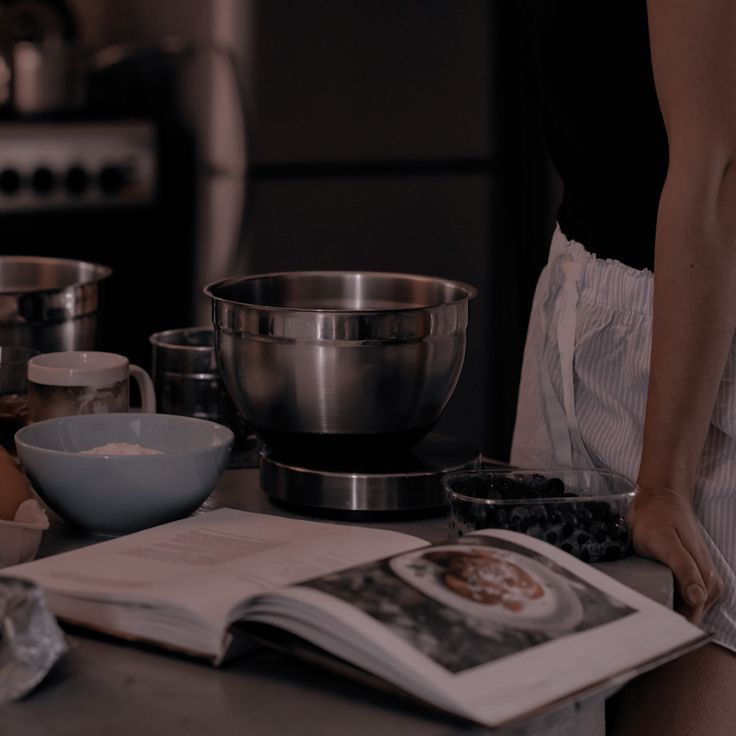
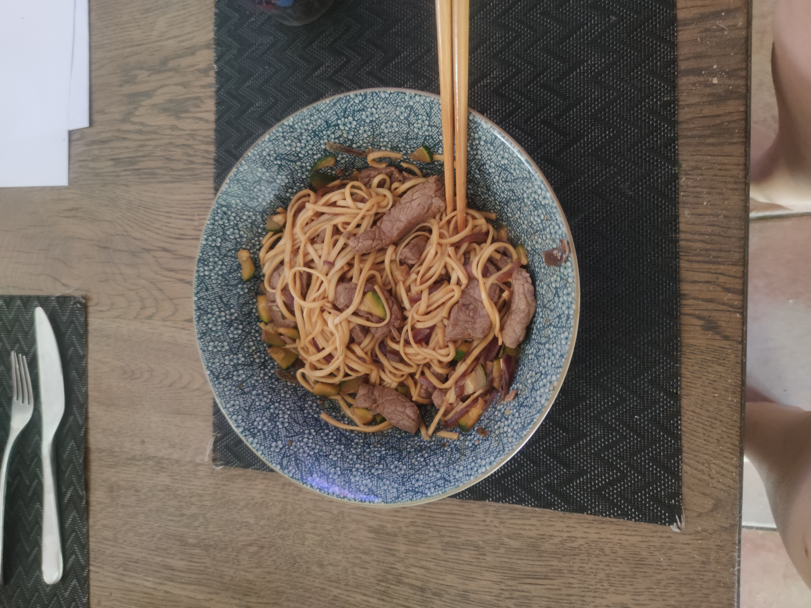
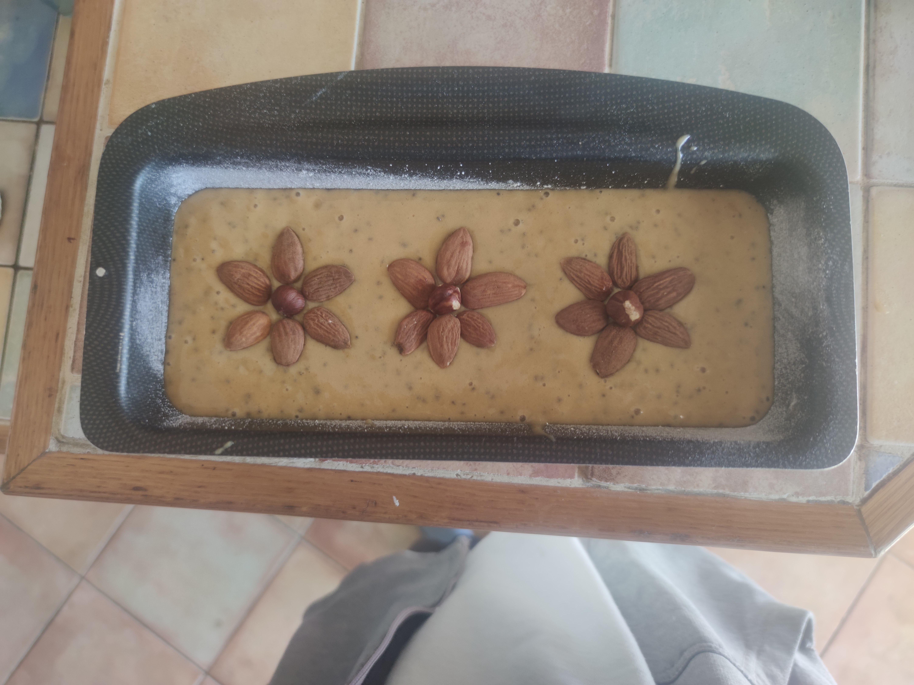
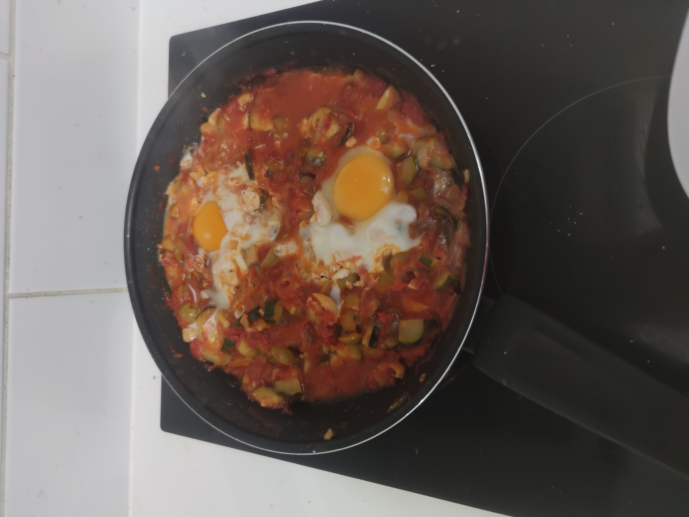
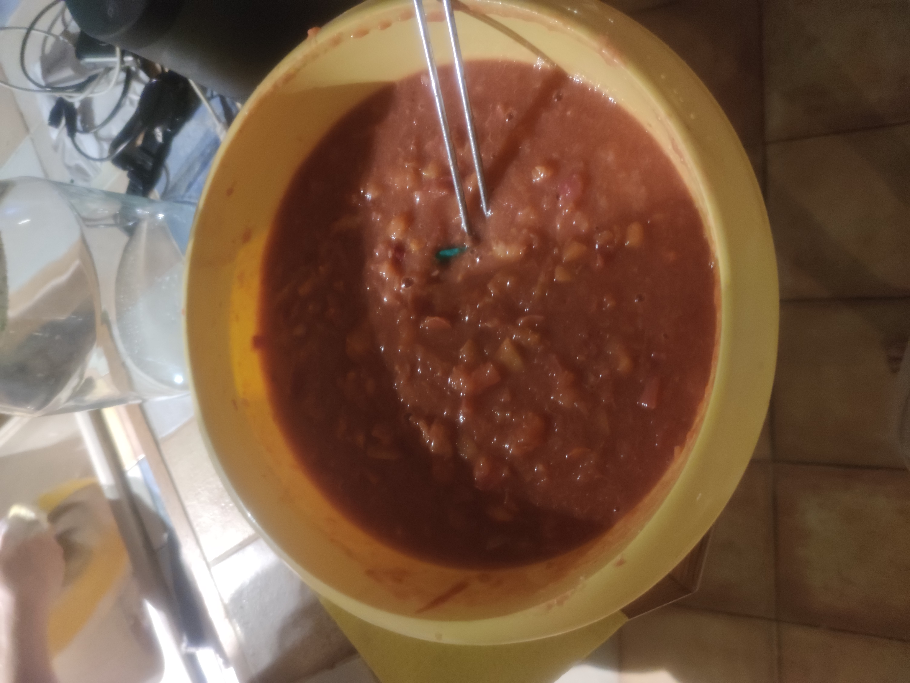
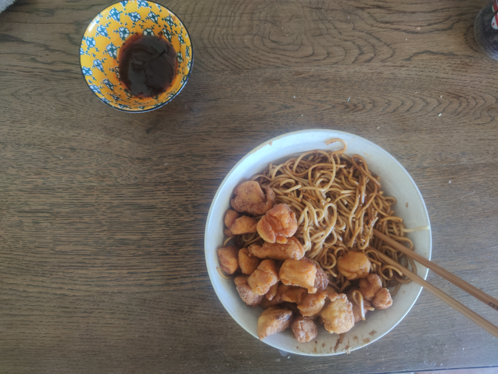

COOKING
Although I especially enjoy making easy dishes that take less than an hour to prepare, I really enjoy cooking—both following recipes and creating them. For example, I really like inventing recipes for sweet dishes. Once, I even made a cake without butter, using avocado instead! I also have signature dishes such as sushi and Italian-style carbonara pasta.

marinated beef

homemade sushis with friends

a completely vegan cake

ratatouille with eggs

peach compote from the garden

fried chicken